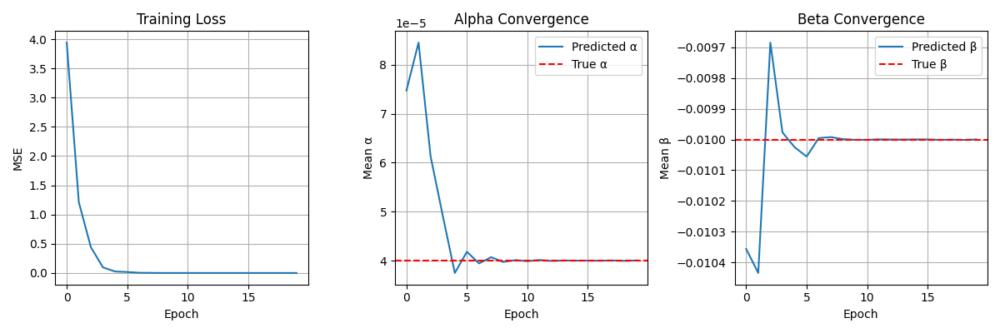
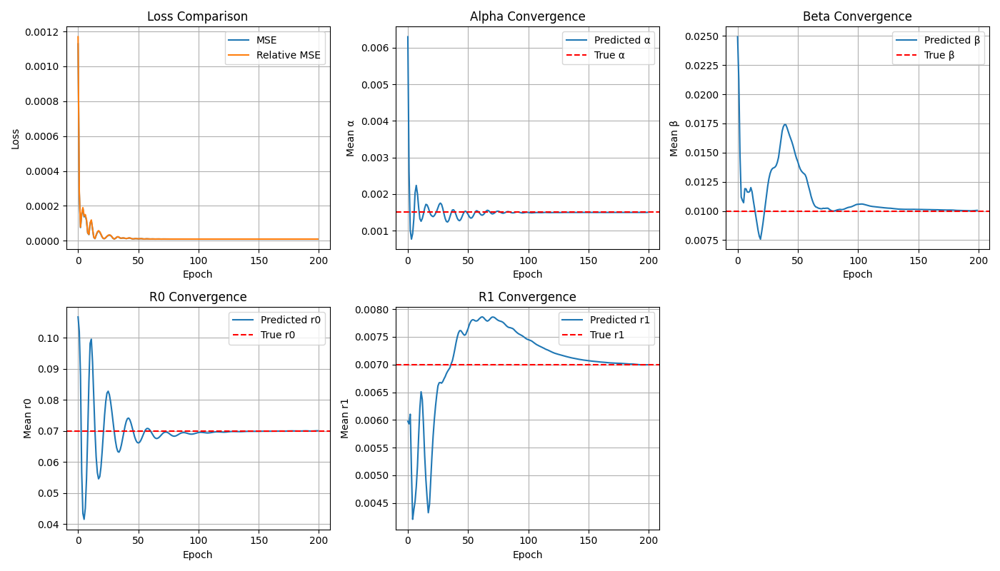

Inverse Modeling Neural Network with Physics-Informed Loss
This approach combines data-driven learning with physics-based
modeling to infer key physical parameters from observed data. The
goal is to develop a neural network–physics hybrid model that
enables inverse modeling of dynamic systems, using simulation
constraints to ensure physically meaningful predictions. This
framework is especially relevant for applications such as
reduced-order modeling (ROM) in biomedical systems, e.g.,
predicting the progression of arterial occlusion from noninvasive
measurements like tissue oxygenation.
Purpose
The primary objective is to infer hidden physical parameters—such
as diffusivity and source strength in a heat conduction model—by
comparing simulated outputs driven by learned parameters to noisy
observed data. Unlike traditional forward models, which predict
system behavior from known parameters, inverse modeling solves the
harder problem of recovering the parameters themselves.
Advantages
- End-to-End Differentiability: The entire model,
including the physics solver, is differentiable, enabling
gradient-based training.
- Physical Interpretability: The learned
features correspond to meaningful physical quantities.
- Simulation-Consistent Learning: The model
respects the underlying physics throughout the learning
process.
- Efficiency: The model learns a reduced
representation of a full simulation, offering potential speed-ups
during deployment.
Feasibility and Precedents
This methodology is well-supported by existing literature in
scientific machine learning. Similar hybrid and physics-informed
frameworks have been applied successfully in fields like
aerospace, fluid mechanics, and structural dynamics (e.g., Journal
of Fluids and Structures, 2017; ERCOFTAC workshops, 2025). These
precedents validate both the theoretical soundness and practical
relevance of embedding physical constraints into learning
pipelines, especially when data are limited and interpretability is
critical.
Case 1 — Inverse modeling a 1D heat conduction system with fixed parameters
Code implementation 1
- Heat Equation: \( \frac{\partial u}{\partial t} = \alpha \frac{\partial^2 u}{\partial x^2} + \beta \sin(\pi x) \)
- Analytical Solution:
\[
u(x, t) = \sin(\pi x) \left[ e^{-\pi^2 \alpha t} + \frac{\beta}{\pi^2 \alpha}(1 - e^{-\pi^2 \alpha t}) \right]
\]
- Numerical Solver: Crank–Nicolson scheme is
used for time-stepping the PDE numerically in a differentiable
manner.
- Neural Network: Maps noisy field
\(u(x, t)\) to \((\alpha, \beta) \in (0, 1)^2\) using a
two-layer MLP.
- Loss: \(\mathcal{L} = \| u_{\text{pred}} - u_{\text{true}} \|^2\), ensuring that learned parameters replicate the observed dynamics.

Case 2 — Inverse modeling a 1D advection–diffusion system with fixed parameters
Code implementation 2
- Advection–Diffusion Equation: \( \frac{\partial u}{\partial t} + v \frac{\partial u}{\partial x} = \alpha \frac{\partial^2 u}{\partial x^2} \)
- Analytical Solution:
\[
u(x,t) = \frac{1}{\sqrt{4\pi \alpha t}} \exp\left(-\frac{(x - vt - 0.5)^2}{4\alpha t}\right)
\]
- Numerical Solver: Implicit finite difference
scheme handling both advection and diffusion; inlet conditions
are defined by the analytical solution.
- Neural Network: Learns to predict
\((\alpha, v) \in (0,1)^2\) from noisy snapshots of \(u(x,t)\).
- Loss: \(\mathcal{L} = \| u_{\text{pred}} - u_{\text{true}} \|^2\), ensuring physics-consistent parameter recovery.

Case 3 — Inverse modeling a 1D advection–diffusion–reaction system with fixed parameters
Code implementation 3
- Advection–Diffusion–Reaction Equation: \( \frac{\partial u}{\partial t} + v \frac{\partial u}{\partial x} = \alpha \frac{\partial^2 u}{\partial x^2} + R(u) \), where \( R(u) \) models spatially heterogeneous reaction terms.
- Synthesized Data Samples: Noisy measurements of \( u(x,t) \) are generated by simulating the forward PDE solver with known parameters \((\alpha, v, r_0, r_1)\) at random time points. Gaussian noise is added to simulate observation uncertainty.
- Numerical Solver: Implicit finite difference scheme that handles all three processes—advection, diffusion, and spatially varying reactions—implemented as a differentiable module for backpropagation.
- Neural Network: Maps input pairs of noisy solution fields and time into predicted parameters \((\alpha, v, r_0, r_1)\), using a two-layer MLP with bounded sigmoid output scaled to physical ranges.
- Loss: \(\mathcal{L} = \| u_{\text{pred}} - u_{\text{true}} \|^2\), comparing simulated outputs under predicted parameters to noisy observations, enabling inverse inference.

Case 4 — Inverse modeling a 1D hemodynamic system
The governing equations are based on conservation of mass and momentum, expressed in terms of flow rate Q(x,t) and cross‑sectional area A(x,t):
Conservation of Mass:
$$\frac{\partial A}{\partial t} + \frac{\partial Q}{\partial x} = 0$$
Conservation of Momentum:
$$\frac{\partial Q}{\partial t} + \frac{\partial}{\partial x} \left( \alpha \frac{Q^2}{A} \right) + \frac{A}{\rho} \frac{\partial P}{\partial x} = -K_R \frac{Q}{A}$$
The pressure P is related to the cross‑sectional area A through a constitutive relation:
$$P = P_0 + \beta \left( \sqrt{A} - \sqrt{A_0} \right)$$
where β is the stiffness parameter, A₀ the reference area, and P₀ the reference pressure.
To numerically solve these PDEs, boundary conditions are required:
Inlet Boundary Conditions
- Prescribe both Q(t) and P(t) (or equivalently A(t)) at the inlet to uniquely define inflow and pressure dynamics.
Outlet Boundary Conditions
Only P(t) is prescribed; Q(t) is inferred using one of four common models:
- Dirichlet (Prescribed Pressure): directly specify P(t).
- Resistance: P(t) = R Q(t).
- RCR (Windkessel): three-element model relating P and Q via resistance and compliance.
- Impedance/Structured Tree: uses impedance or structured tree model—Q(t) is computed via convolution with the inverse FT of admittance.
In all cases, the user prescribes P(t) (or its defining parameters), and the solver infers Q(t) based on the chosen outlet model.